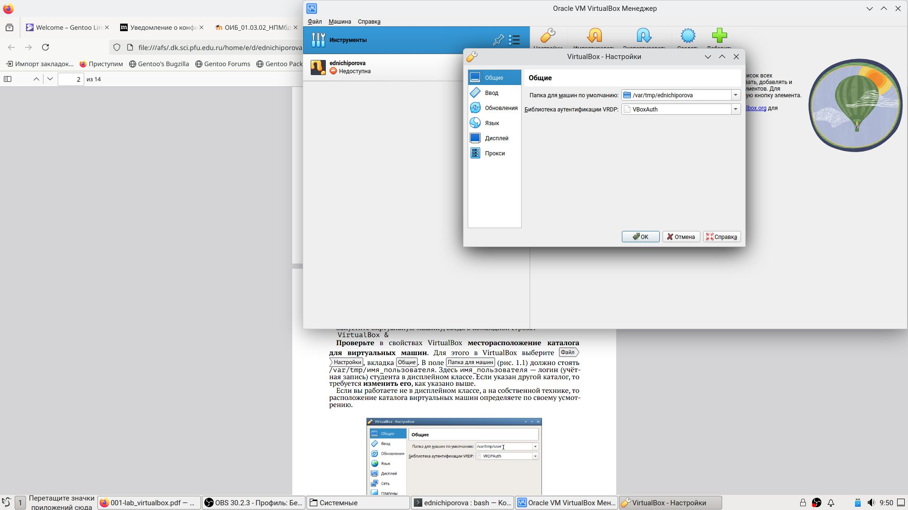
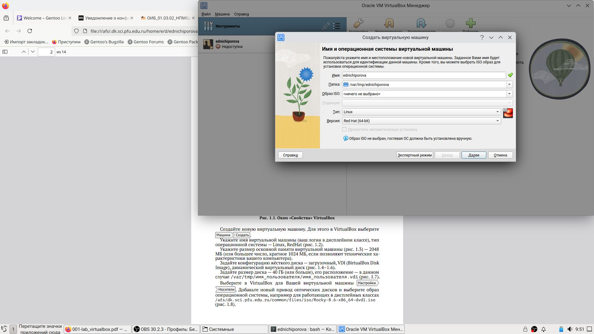
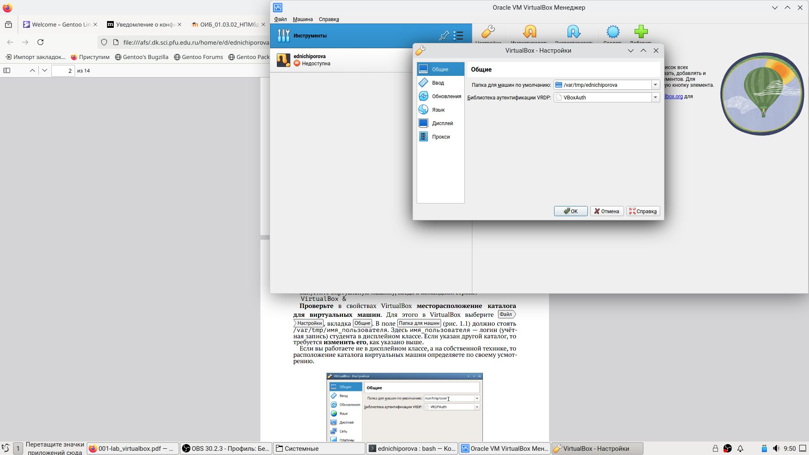
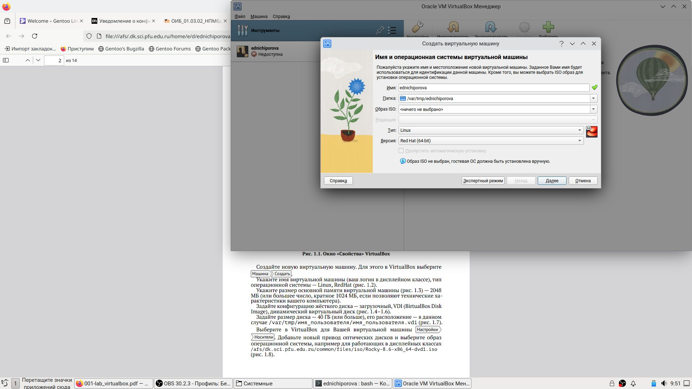
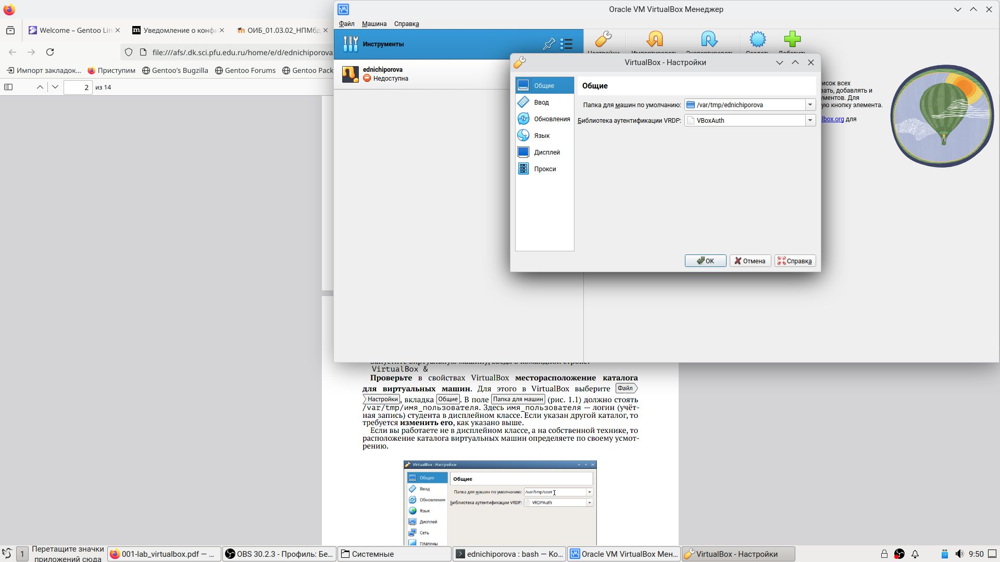
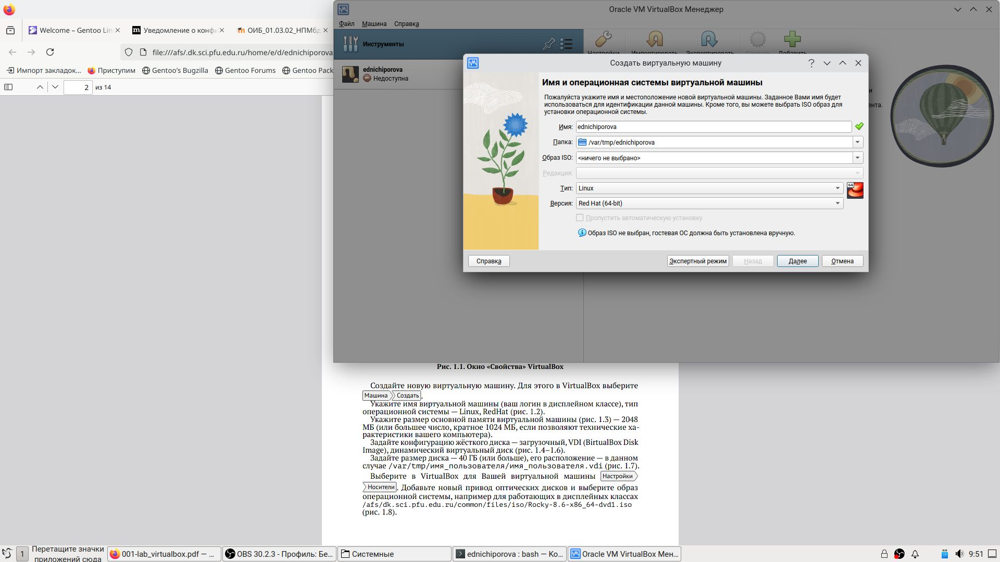

 
 Целью данной работы является приобретение практических навыков установки операционной системы на виртуальную машину, настройки ми- нимально необходимых для дальнейшей работы сервисов
Я выполняю лабораторную работу на домашнем оборудовании, поэтому со- здаю новую виртуальную машину в VirtualBox, выбираю имя, местоположение и образ ISO, устанавливать будем операционную систему Rocku DVD (рис. 1-3) (рис. [-@fig:001])(рис. [-@fig:002])(рис. [-@fig:003]).
 
#Выставляю основной памяти размер 2048 Мб(рис. 4) (рис. [-@fig:004])
#Выделаю 40 Гб памяти на виртуальном жестком диске (рис. 5) (рис.
[-@fig:005])
#Устанавливаю носители (рис. 6) (рис. [-@fig:006])
Выбираю язык установки (рис. 7) (рис. [-@fig:007]) Подключаю Интернет
(рис. 9) (рис. [-@fig:009])
В обзоре установки будем проверять все настройки и менять на нужные
Выбираю дополнительный язык русский(рис. 8) (рис. [-@fig:008])
Часовой пояс поменяла на московское время Сделала пароль для
пользователя
Начинается загрузка операционной системы (рис. 10) (рис. [-@fig:010])
Я приобрела практические навыки установки операционной системы на вир- туальную машину, настройки минимально необходимых для дальнейшей ра- боты сервисов.
:::